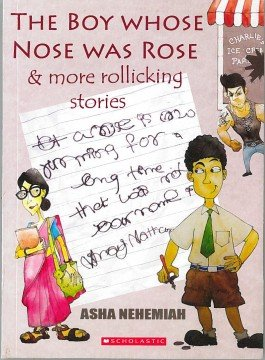

कृष कोटडिया ने पोस्ट की कॉमिक स्ट्रिप : परीक्षा का छात्रों पर प्रभाव
Oct 7, 2021

नार्थस्टार स्कूल में हिंदी विषय के भाग के रूप में शिक्षार्थियों को कॉमिक्स बनाकर अपनी रचनात्मकता को लागू करने का अवसर मिला।
❤Ayush Parsana Shared A Mini Saga : Chinese Lights:Power Out
Oct 7, 2021

Last week I went shopping and bought chinese fairy lights for my christmas tree. I hung the lights on the tree. Splendour all around. My family all around. Suddenly the house was dark. The fuse had tripped. The electrician came and declared "Your chinese fairy lights have put you in darkness"
❤Tirth Khunt Shared A Mini Saga : Buying A Toy
Oct 7, 2021
"I am going to buy a new toy", Sam said to his friend excited. As Sam approached the shop to buy his new toy, he saw a dead body outside the shop. He went inside and told the shopkeeper about it. The shopkeeper said "Today is April Fool's Day"!
❤Bhavya Thummar Shared A Mini Saga : The Last Nightmare
Oct 5, 2021
I finally out ran the ghost... Phew! Now to find the magical spell to get away. Oh no, He found me! I gotta run as fast as I could, I believed that could out run him, Finally I out ran him, I'm exhausted, I searched and I found it! Phew... That was a hell of a nightmare.
❤Suhan Panjavani Shared A Mini Saga : The Red Stains
Oct 4, 2021
I woke up after a long journey from Mumbai to Kerala.It was morning. I saw something -”Was the ceiling leaking blood?” I looked out of the window. I saw blood raining from the sky , I got scared. Switched on my TV and I learnt about Kerala’s blood rain.
❤Suhan Panjavani Shared A Fact File On : Ratan Tata
Oct 4, 2021
Ratan Tata was born in 1937 in Surat, Gujarat.His father's name was naval tata while Sooni Tata was his mother. Parents Naval and Sonoo separated in 1948 when Ratan was 10, and he was subsequently raised by the widow of Sir Ratanji Tata, his grandmother, Navajbai Tata, who formally adopted him through the J. N. Petit Parsi Orphanage. Naval Tata was the adopted grandson of Jamsetji Tata, founder of the Tata Group.
He started his career with Tata Group in 1962 at the age of 25.And now he has bought Jaguar and Land Rover as his own companies.He also designed and launched Nano, the world's cheapest car in 2008. Ratan Tata is also well known as a successful investor. He has invested money in many startups at the early stage which have now become great companies. He has also invested in successful startups likeCurefit
❤Kush Kundalia Shared A Mini Saga : Wings Go Hard
Sep 29, 2021
It’s one of the guilty pleasures. It looked dangerous. like it was on fire. something that I would be away from. It was red and hot. It looked like it came straight out of Satan's claws. ooh, can I get some of that milk, the spicy chicken wings are spicy
❤Priyank Jivani Shared A Poster On : Still Pictures vs Motion Pictures
Sep 26, 2021
Explorations are one of many aspects that makes The Northstar School unique from other schools, As a part of their 2nd explorations, learners of grade 7 and 8 went through the topic of Still Pictures & Motion Pictures. click on the View In Gallery Button to see a compare and contrast done by the learners in the form of a venn diagram.
View in GalleryDhyan Thakkar Shared A Fact File On : Isaac Newton
Sep 28, 2021
Introduction
Sir Isaac Newton was famous for many of his great discoveries. He was born on the 4th of January 1643. He was born in England and died in Great Britain. He was educated at Trinity College which was Cambridge. The fields he studied were Physics-Natural philosophy-alchemy-theology-mathematics-astronomy and economics. After he started teaching one of his students was William Whiston. He died on the 31st of March 1727. When he died he was 84.
Discoveries
One of his greatest achievements was finding about gravity making the laws of motion,the Reflecting telescope, the Newtonian telescope,he discovered calculus,Magnum Opus,binomial theorem one of the great equations he found out were e=mc2 or Energy mass and measuring the speed of light.
Facts
He is called the father of modern physics and science. He hated his step - father. He was in critical condition so he wasn’t expected to survive when he was a child. The apple falling on his head was one of the greatest incident that occurred in history. Because of his shyness he stuttered a lot as a child. Despite being born on the 4th of January but it was believed that he was born on Christmas Day. While his father suggested him to join politics ,he had no interest in politics.
Open ❤Vasu Rakholiya Shared A Presentation On : Ferrucio Lamborghini
Sep 16, 2021
As a part of X-UNIT at The Northstar School Learners went over the topic of motion. This is a PPT made by a learner please click on the "Open" Button to see it.
Open ❤Kush Kundalia Shared A Book Review On : "The Boy Whose Nose Was A Rose And Other Rollicking Stories"
Sep 15, 2021
The book is written by Asha Nemiah who is a children’s author who likes to write on the genre mystery and fun. The blurb says:” A boy with terrible handwriting thinks up wicked ploys to evade handwriting classes — but can he outwit the new English teacher? A vampire moves next door with hilarious consequences. Three children unknowingly bid for a pile of old junk at an auction and uncover an amazing story. Mixed-up luggage! Swapped name-boards! Mistaken identities! Exciting mysteries! This collection of twelve wonderfully funny stories delights with its mixture of warmth, wit, and ...
Read More ❤Kush Kundalia Shared A Blog On : Malaria
Sep 15, 2021
As we all know, malaria is a chronic disease that has cost millions of lives. In this blog, we will go over some facts and some information about this deadly disease - “Malaria”. Statistically, there have been 229 million cases in 2019 alone. Manufacturers’ delivery data for 2004–2019 show that nearly 2.2 billion insecticide-treated mosquito nets (ITNs) were supplied globally in that period, of which 1.9 billion (86%) were supplied to sub-Saharan Africa. With an estimated 215 million malaria cases and 386 000 malaria deaths in 2019, the WHO African Region accounted for about 94% of cases and deaths globally. Although there were...
Read More ❤